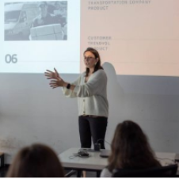
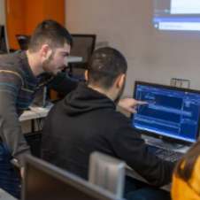

|

|
Buraxılış layihəsi
Buraxılış layihəsi "Code Academy"dəki
təhsilin yekun layihəsi hesab olunur və
çox önəmli rol oynayır. Təqdimat təhsil
boyunca keçirilən bütün mövzuları
özündə cəmləyir. Buraxılış layihəsi
tədrisi
Ətraflı
|

|
Praktiki tədris metodu
Hər hansı bir peşəni yaxşı bacarmaq
üçün yalnız öyrənmək kifayət deyil,
gərək öyrəndiklərinizi tətbiq edə bilmə
bacarığına da yiyələnib təcrübə
toplayasınız. Buna görə Code Academy-
nin
Ətraflı
|
|
|
Akademik transkript
Tapşırıqlar, mini layihələr müəllim
tərəfindən yoxlanılması sizin bilik və
bacarıqlarının hansı dərəcədə olduğunu
və həm tədris müddətində, həm də
məzun olduqdan sonra hansı sahələri
daha
Ətraflı
|
|
Mentor sistemi
Mentor sistemi Code Academy-də
tələbələrin təhsildə öyrəndiklərini
təkrar etmələrini və gücləndirmələrini
təmin edən xüsusi bir sistemdir.
Ətraflı
|